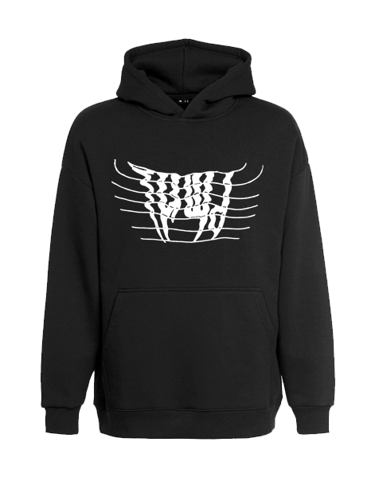

Товары
\Худи\ТИШЬ
Худи оверсайз ТИШЬ

Удобство и стиль - это про это худи
Мистика постоянно привлекала людей, поэтому мы и создали этот принт, нанесённый шелкографией
Одно из преимуществ данного худи в том, что все бирки полупрозрачные
Состав:70% хлопок, 30% полиэстр